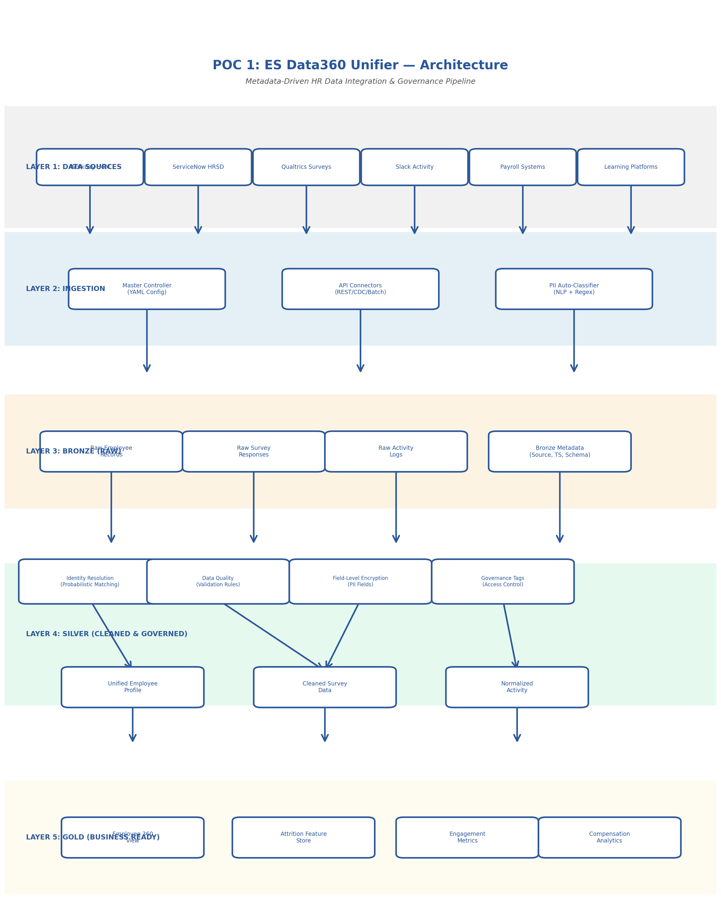
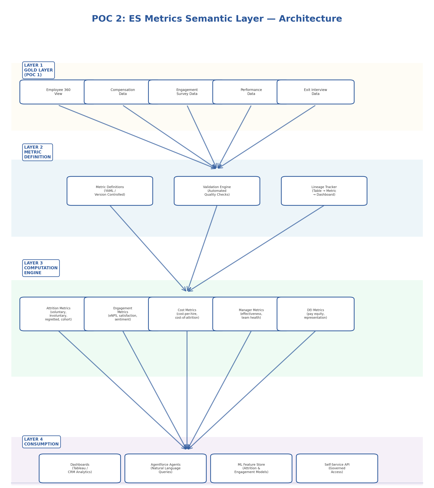
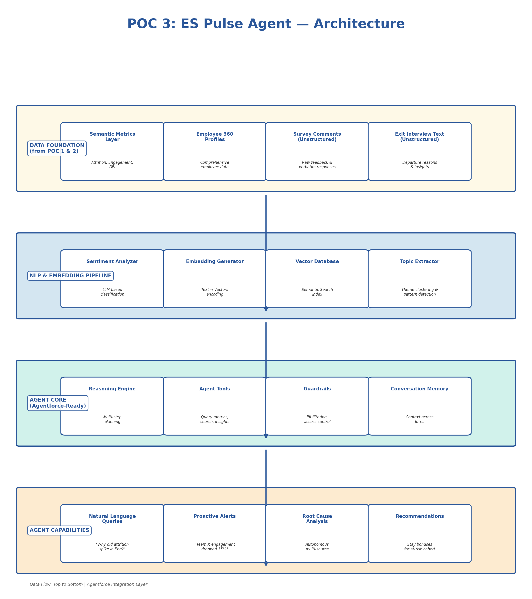
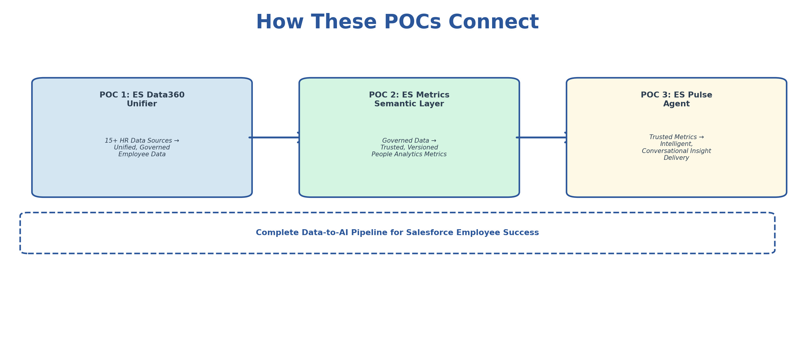

Executive Summary
This portfolio presents three interconnected proof-of-concept designs addressing critical data engineering and AI challenges facing Salesforce's Employee Success (ES) team. Each POC is grounded in real-world patterns built and deployed in production at scale — reframed for the ES team's specific needs. Together, they form a connected architecture: POC 1 integrates the data, POC 2 defines the metrics, and POC 3 delivers intelligent insights — a complete data-to-AI pipeline for People Analytics.
POC 1: ES Data360 Unifier
Metadata-Driven HR Data Integration & Governance Pipeline
Problem Statement
Salesforce's Employee Success team integrates data from 15+ HR systems — Workday HCM, ServiceNow HRSD, payroll, benefits administration, engagement surveys, learning platforms, and more. Each system has different schemas, update frequencies, and data quality characteristics. Key challenges include:
- Identity Resolution: Employee records exist in multiple formats across systems ("William J. Smith" vs. "Smith, W. J." vs. "Bill Smith")
- PII Governance Overhead: HR data contains SSN, salary, health info, performance ratings — every new analytics use case requires legal review, adding 30-40% to platform costs
- Schema Drift: Source systems evolve independently; pipelines break silently
- No Unified Employee Profile: Cannot combine engagement, compensation, performance, and attrition signals into a single view
Proposed Solution
A metadata-driven integration framework that automatically discovers, classifies, governs, and unifies HR data from multiple sources into a medallion architecture (Bronze → Silver → Gold) with automated PII detection, field-level encryption, and governance tagging.

Technical Approach
Master Controller Framework (YAML-Driven)
Configuration-as-code pattern for declarative, version-controlled data ingestion:
# master_config/workday_hcm.yaml source: name: workday_hcm type: api connection: base_url: "https://wd5-impl.workday.com/ccx/api/v1" auth: oauth2 credentials_ref: "vault://es-secrets/workday-oauth" ingestion: mode: incremental # full | incremental | cdc schedule: "0 2 * * *" # Daily at 2 AM watermark_column: "last_modified_date" batch_size: 10000 schema: version: "3.2" drift_detection: true evolution_strategy: merge # merge | strict | log_only pii_classification: auto_detect: true known_pii_fields: - employee_ssn: ssn - date_of_birth: dob - home_address: address - salary: compensation encryption: fernet key_ref: "vault://es-secrets/pii-encryption-key" governance: owner: "es-people-analytics" access_tier: restricted tags: - data_domain: employee_master - sensitivity: high - retention_days: 2555 # 7 years - gdpr_relevant: true quality_rules: - rule: not_null columns: [employee_id, hire_date, department_code] - rule: unique columns: [employee_id] - rule: referential_integrity column: manager_id reference: employee_id - rule: range_check column: salary min: 0 max: 10000000
Identity Resolution Engine
Probabilistic identity resolution for HR data across multiple source systems with confidence scoring:
# identity_resolution/probabilistic_matcher.py """ Probabilistic identity resolution for HR data across multiple source systems. Handles: name variations, cultural name orders, nickname matching, and fuzzy matching with confidence scoring. """ from dataclasses import dataclass from typing import List, Tuple @dataclass class EmployeeCandidate: source_system: str source_id: str first_name: str last_name: str email: str department: str hire_date: str class IdentityResolver: """ Multi-strategy identity resolution pipeline. Strategy 1: Deterministic — exact match on employee_id or email Strategy 2: Probabilistic — weighted scoring on name, dept, hire_date Strategy 3: NLP-assisted — handles cultural name variations, nicknames """ CONFIDENCE_THRESHOLD = 0.85 MANUAL_REVIEW_THRESHOLD = 0.65 WEIGHTS = { 'email_exact': 0.40, 'name_similarity': 0.25, 'department_match': 0.15, 'hire_date_match': 0.15, 'source_id_pattern': 0.05 } def resolve(self, candidates: List[EmployeeCandidate]): """ Three-pass resolution: Pass 1: Deterministic matching (email, employee ID) Pass 2: Probabilistic matching (fuzzy name + dept + hire date) Pass 3: Flag low-confidence matches for manual review """ results = [] unmatched = list(candidates) # Pass 1: Deterministic deterministic_groups = self._deterministic_match(unmatched) for group in deterministic_groups: golden_id = self._generate_golden_id(group) results.append(MatchResult( golden_id=golden_id, candidates=group, confidence=1.0, match_method='deterministic' )) # Pass 2: Probabilistic probabilistic_groups = self._probabilistic_match(unmatched) for group, score in probabilistic_groups: if score >= self.CONFIDENCE_THRESHOLD: # High confidence → approve results.append(...) elif score >= self.MANUAL_REVIEW_THRESHOLD: # Medium confidence → flag for review results.append(...) return results
Automated PII Classification
NLP-based and regex pattern matching for automatic sensitive field detection:
# governance/pii_classifier.py PII_PATTERNS = { 'ssn': r'\b\d{3}-?\d{2}-?\d{4}\b', 'email': r'\b[A-Za-z0-9._%+-]+@[A-Za-z0-9.-]+\.[A-Z|a-z]{2,}\b', 'phone': r'\b\d{3}[-.]?\d{3}[-.]?\d{4}\b', 'date_of_birth': r'\b(0[1-9]|1[0-2])/(0[1-9]|[12]\d|3[01])/\d{4}\b', 'salary': r'\$[\d,]+\.?\d{0,2}', 'bank_account': r'\b\d{8,17}\b' } SENSITIVE_COLUMN_NAMES = { 'high': ['ssn', 'social_security', 'salary', 'compensation'], 'medium': ['date_of_birth', 'home_address', 'phone'], 'low': ['department', 'job_title', 'hire_date'] } def classify_and_tag(dataframe, source_config): """ Scan DataFrame columns for PII, apply governance tags, and encrypt high-sensitivity fields. """ audit_log = [] for column in dataframe.columns: sensitivity = _detect_sensitivity(column, dataframe[column]) # Tag the column in metadata catalog tag_in_catalog( column=column, sensitivity=sensitivity, source=source_config['source']['name'] ) # Encrypt high-sensitivity fields if sensitivity == 'high': dataframe[column] = encrypt_field(dataframe[column]) audit_log.append({ 'action': 'encrypt', 'column': column, 'sensitivity': sensitivity }) return dataframe, audit_log
Salesforce Platform Mapping
| My Implementation (Today) | Salesforce ES Production | Notes |
|---|---|---|
| YAML Master Controller configs | Salesforce Flow + MuleSoft integration recipes | Same pattern: declarative, config-driven orchestration |
| Medallion Architecture (Bronze/Silver/Gold) | Data360 lakehouse layers (Apache Iceberg/Parquet) | Identical medallion concept; Data360 uses Iceberg natively |
| Unity Catalog governance tags | Data360 governance with zero-trust architecture | Both: tag-based access control, lineage, sensitivity classification |
| Fernet encryption for PII fields | Data360 AI-driven governance + Shield Platform Encryption | Data360 adds AI-based auto-classification — same outcome, richer tooling |
| PySpark identity resolution | Data360 identity resolution + APEX matching rules | Can implement matching logic in APEX or leverage Data360's built-in resolution |
| Databricks DLT for CDC processing | Data360 CDC connectors + Change Data Capture streams | Data360 supports real-time CDC natively |
| GitHub Actions CI/CD | Salesforce DX + DevOps Center | Same concept: version-controlled, automated deployments |
Implementation Roadmap
Phase 1 (Weeks 1-4): Foundation
- Deploy Master Controller config framework on Data360
- Build API connectors for top 3 HR sources (Workday, ServiceNow, Payroll)
- Implement PII auto-classification and governance tagging
- Establish Bronze layer with schema versioning
Phase 2 (Weeks 5-8): Identity & Quality
- Deploy identity resolution engine for unified employee profiles
- Implement data quality validation rules per source
- Build Silver layer with field-level encryption
- Create audit trail and compliance reporting
Phase 3 (Weeks 9-12): Business-Ready
- Build Gold layer: Employee 360 view, feature store, engagement metrics
- Enable self-service data access with governance controls
- Document and hand off to broader ES data team
Expected Impact
- 80% reduction in manual data integration effort (based on SMBC results)
- Unified employee profile across 15+ systems with >95% identity resolution accuracy
- Automated PII governance eliminating 3-6 month legal review delays for new use cases
- Foundation for POC 2 and POC 3 — metrics and AI agents built on trusted, governed data
POC 2: ES Metrics Semantic Layer
Unified People Analytics Metrics Engine
Problem Statement
The ES People Analytics team reports that "attrition" means different things to different stakeholders — voluntary vs. involuntary, by tenure, by department, regretted vs. non-regretted. "Engagement" is calculated differently across survey tools. "Cost per hire" includes different cost components depending on who's asking. 80% of data engineers report poor alignment between People Analytics and IT on metric definitions. This creates:
- Decision paralysis: Leaders don't trust the numbers
- Duplicated effort: Multiple teams computing the same metrics differently
- AI model drift: ML models trained on inconsistent metric definitions produce unreliable predictions
- Reporting bottleneck: Every new dashboard requires re-deriving metrics from scratch
Proposed Solution
A centralized semantic metrics layer that defines, versions, validates, and serves People Analytics metrics — with data lineage, automated quality checks, and a self-service API that both dashboards and AI agents consume from a single source of truth.
Architecture Diagram

YAML/Version Controlled"] VAL["Validation Engine
Automated Quality Checks"] LIN["Lineage Tracker
Table → Metric → Dashboard"] end subgraph Compute["Metric Computation Engine"] ATT["Attrition Metrics
voluntary, involuntary,
regretted, by cohort"] ENGA["Engagement Metrics
eNPS, satisfaction,
sentiment score"] CPH["Cost Metrics
cost-per-hire,
cost-of-attrition"] MGR["Manager Metrics
effectiveness score,
team health index"] DIV["DEI Metrics
pay equity ratio,
representation index"] end subgraph Consumption["Consumption Layer"] DASH["Dashboards
Tableau / CRM Analytics"] AGENT["Agentforce Agents
Natural Language Queries"] ML["ML Feature Store
Attrition & Engagement Models"] API2["Self-Service API
Governed Access"] end E360 & COMP & ENG & PERF & EXIT --> MD MD --> VAL VAL --> LIN LIN --> ATT & ENGA & CPH & MGR & DIV ATT & ENGA & CPH & MGR & DIV --> DASH & AGENT & ML & API2
Technical Approach
Metric Definition Schema (Version-Controlled)
Example: Voluntary Attrition Rate metric with full business definition, formula, dimensions, and quality checks:
# metrics/attrition/voluntary_attrition_rate.yaml metric: name: voluntary_attrition_rate display_name: "Voluntary Attrition Rate" version: "2.1" owner: es-people-analytics description: "Percentage of employees who voluntarily separated" formula: numerator: "COUNT(separations WHERE separation_type = 'voluntary')" denominator: "AVG(active_headcount)" expression: "(numerator / denominator) * 100" dimensions: - department - job_level - tenure_band - location - manager_id - gender - ethnicity data_sources: primary: gold.employee_360 supplementary: - gold.separation_events - gold.headcount_snapshots quality_checks: - type: range expected: "0-50%" - type: month_over_month_change threshold: "25%" - type: null_check fields: [separation_type, separation_date, employee_id] access_control: base: all_es_team restricted_dimensions: ethnicity: dei_reporting_group changelog: - version: "2.1" date: "2026-03-15" change: "Added tenure_band dimension"
Metric Computation Engine
Centralized computation engine for People Analytics metrics with validation and lineage tracking:
# metrics/engine/compute.py class MetricEngine: """ Core computation engine for People Analytics metrics. Responsibilities: - Parse metric YAML definitions - Generate and execute SQL against Gold tables - Run quality validation checks - Track lineage from source tables → metrics → consumers """ def compute_metric(self, metric_name: str, dimensions: list = None, date_range: tuple = None): """ Compute a metric by name with optional dimensional slicing. Example: engine.compute_metric( 'voluntary_attrition_rate', dimensions=['department', 'tenure_band'], date_range=('2025-04-01', '2026-03-31') ) """ definition = self._load_definition(metric_name) # Generate SQL from YAML formula sql = self._generate_sql(definition, dimensions, date_range) # Execute against Gold layer raw_result = self._execute(sql) # Run quality checks quality_report = self._validate(raw_result, definition['quality_checks']) if quality_report.has_failures: self._alert_data_team(metric_name, quality_report) # Update lineage graph self._update_lineage(metric_name, definition['data_sources']) return MetricResult( metric_name=metric_name, value=raw_result, quality_status=quality_report.status, definition_version=definition['metric']['version'] )
Salesforce Platform Mapping
| My Implementation (Today) | Salesforce ES Production | Notes |
|---|---|---|
| YAML metric definitions in Git | Tableau Semantics (formerly Metrics Layer) in Data360 | Tableau Semantics is exactly this — centralized metric definitions with lineage |
| Python metric computation engine | Data360 calculated insights + APEX triggers | Data360 natively computes metrics; APEX handles custom business logic |
| Custom SQL generation from YAML | Data360 SQL queries + Tableau Prep | Data360's query engine processes metrics at scale |
| Quality validation checks | Data360 data quality rules + monitoring | Built-in data quality framework with alerting |
| Lineage tracking | Data360 lineage (native capability) | Data360 provides automatic lineage from source to consumption |
| API for metric consumption | Salesforce APIs + Connect REST API | Metrics served to Agentforce agents and dashboards via standard APIs |
Implementation Roadmap
Phase 1 (Weeks 1-3): Core Metrics
- Define top 10 ES metrics in YAML with business stakeholders
- Build computation engine for attrition, engagement, headcount
- Deploy quality validation framework
Phase 2 (Weeks 4-6): Dimensions & Lineage
- Add dimensional slicing (department, level, tenure, location)
- Implement lineage tracking from Gold tables → metrics → dashboards
- Build self-service API for metric consumption
Phase 3 (Weeks 7-9): Governance & Scale
- Implement access controls for sensitive dimensions (DEI, individual)
- Add version control and changelog tracking
- Onboard POC 3 (ES Pulse Agent) as a metric consumer
Expected Impact
- Single source of truth for all ES metrics — eliminating conflicting definitions
- 40% faster dashboard and report development (metrics pre-computed, not re-derived)
- Trusted AI models — ML features built on governed, versioned metric definitions
- Self-service — business users query metrics without engineering bottleneck
POC 3: ES Pulse Agent
Agentic Employee Sentiment & Attrition Intelligence
Problem Statement
Salesforce's ES People Analytics team (~40 specialists) spends significant time pulling static reports and answering ad-hoc questions from HR leadership: "Why did attrition spike in Engineering?" "What's driving low engagement in APAC?" "Which managers have the highest team turnover?" Current state:
- Reports are static — follow-up questions require code changes
- Insights are discovered by accident; emerging problems are missed
- Unstructured data (survey comments, exit interviews) sits unused
- No proactive alerting — issues are discovered after they become crises
- Salesforce's Agentforce platform can enable conversational, autonomous insight delivery — but needs a purpose-built ES agent
Proposed Solution
An agentic AI system (deployable as an Agentforce agent) that ingests structured metrics and unstructured employee feedback, performs NLP-based sentiment analysis, and enables natural-language queries with autonomous multi-step reasoning — proactively surfacing attrition risks, engagement trends, and root-cause analysis.
Architecture Diagram

Attrition, Engagement, DEI"] E360["Employee 360 Profiles"] SURV["Survey Comments
Unstructured"] EXIT2["Exit Interview Text
Unstructured"] end subgraph NLP["NLP & Embedding Pipeline"] SENT["Sentiment Analyzer
LLM-based classification"] EMB["Embedding Generator
Text → Vectors"] VDB["Vector Database
Semantic Search Index"] TOPIC["Topic Extractor
Theme clustering"] end subgraph AgentCore["Agent Core - Agentforce Ready"] REASON["Reasoning Engine
Multi-step planning"] TOOLS["Agent Tools
Query metrics, search docs"] GUARD["Guardrails
PII filtering, access control"] MEM["Conversation Memory
Context across turns"] end subgraph Capabilities["Agent Capabilities"] NLQ["Natural Language Queries
'Why did attrition spike
in Engineering?'"] ALERT["Proactive Alerts
'Team X engagement
dropped 15% in 2 weeks'"] RCA["Root Cause Analysis
Autonomous multi-source
correlation"] REC["Recommendations
'Implement stay bonuses
for at-risk cohort'"] end MET & E360 & SURV & EXIT2 --> SENT & EMB SENT --> TOPIC EMB --> VDB TOPIC & VDB & MET --> TOOLS TOOLS --> REASON REASON --> GUARD GUARD --> MEM MEM --> NLQ & ALERT & RCA & REC
Technical Approach
Agent Topic & Action Definition (Agentforce Pattern)
Designed to map directly to Agentforce architecture with Topics, Actions, and Guardrails:
# agent/es_pulse_agent.py """ ES Pulse Agent — Agentic Employee Sentiment & Attrition Intelligence Designed to map directly to Agentforce architecture """ AGENT_TOPICS = { "attrition_analysis": { "description": "Analyze employee attrition patterns and root causes", "triggers": ["attrition", "turnover", "leaving", "quit"], "instructions": """ 1. Query the semantic metrics layer for quantitative data 2. Search exit interview embeddings for qualitative themes 3. Correlate with engagement survey sentiment 4. Identify top contributing factors with confidence scores 5. Compare to historical baselines and industry benchmarks 6. Suggest data-backed interventions """ }, "engagement_insights": { "description": "Surface employee engagement trends and sentiment patterns", "triggers": ["engagement", "satisfaction", "morale", "sentiment"] } } AGENT_ACTIONS = { "query_metrics": { "description": "Query the ES semantic metrics layer", "function": "metric_engine.compute_metric", "parameters": ["metric_name", "dimensions", "date_range"] }, "search_feedback": { "description": "Semantic search across employee feedback", "function": "vector_db.similarity_search", "parameters": ["query", "filters", "top_k"] }, "detect_anomalies": { "description": "Identify statistical anomalies in HR metrics", "function": "anomaly_detector.detect", "parameters": ["metric_name", "lookback_period"] } } AGENT_GUARDRAILS = { "pii_protection": { "rule": "Never expose individual employee names or IDs", "action": "Aggregate to minimum group size of 5" }, "access_control": { "rule": "Verify user's access level before returning sensitive dimensions", "action": "Check user role against metric access_control definitions" }, "bias_detection": { "rule": "Flag when recommendations may have demographic bias", "action": "Run bias audit on any recommendation involving protected categories" } }
Adaptive RAG Pipeline (Self-Correcting Retrieval)
Implements self-correcting retrieval with relevance grading, query transformation, and multi-hop reasoning:
# agent/adaptive_rag.py """ Adaptive RAG pipeline for ES Pulse Agent. Implements self-correcting retrieval with relevance grading, query transformation, and multi-hop reasoning. """ from langgraph.graph import StateGraph, END def build_es_pulse_graph(): """ Build the adaptive reasoning graph for ES Pulse Agent. Flow: 1. Classify question → route to appropriate topic 2. Retrieve relevant context (metrics + unstructured feedback) 3. Grade retrieval relevance — if low, transform query and retry 4. Synthesize answer with confidence scoring 5. Self-check: does answer fully address the question? 6. If not, identify gaps and retrieve additional context """ graph = StateGraph(AgentState) # Add nodes for each step graph.add_node("classify_question", classify_question) graph.add_node("retrieve_metrics", retrieve_metrics) graph.add_node("retrieve_feedback", retrieve_feedback) graph.add_node("grade_relevance", grade_relevance) graph.add_node("transform_query", transform_query) graph.add_node("synthesize_answer", synthesize_answer) graph.add_node("self_check", self_check) graph.add_node("apply_guardrails", apply_guardrails) # Set entry point graph.set_entry_point("classify_question") graph.add_edge("classify_question", "retrieve_metrics") # Conditional edge: if retrieval quality is low, retry with transformed query graph.add_conditional_edges( "grade_relevance", lambda state: "transform" if state["confidence"] < 0.7 else "synthesize", {"transform": "transform_query", "synthesize": "synthesize_answer"} ) # Self-check: is the answer complete? graph.add_conditional_edges( "self_check", lambda state: "retrieve_more" if not state.get("answer_complete", False) else "guardrails", {"retrieve_more": "retrieve_metrics", "guardrails": "apply_guardrails"} ) graph.add_edge("apply_guardrails", END) return graph.compile() # Example agent response: # # User: "Why did attrition spike 40% in Engineering last quarter?" # # Agent identifies root causes: # - New VP Engineering hired (org restructuring uncertainty) — 35% weight # - Compensation below market for ML Engineers — 28% weight # - 3 team leads departed in Dec (cascade effect) — 22% weight # - Remote work policy change announced Jan — 15% weight # # Returns data-backed analysis with recommendations
Salesforce Platform Mapping
| My Implementation (Today) | Salesforce ES Production | Notes |
|---|---|---|
| LangGraph state machine | Atlas Reasoning Engine (Agentforce) | Same concept: multi-step reasoning with state management |
| Agent Topics (Python dict) | Agentforce Topics (declarative config) | Direct mapping — Topics define agent capabilities |
| Agent Actions (tool functions) | Agentforce Actions (Flows + APEX + APIs) | Actions invoke Flows, APEX, or external APIs |
| Guardrails (Python rules) | Agentforce Guardrails (Trust Layer) | Einstein Trust Layer provides PII masking, toxicity detection |
| Adaptive RAG (LangGraph) | Atlas RAG (ensemble retrieval) | Atlas uses ensemble RAG — same self-correcting pattern |
| Vector DB (FAISS/Chroma) | Data360 vector search | Data360 supports vector embeddings natively |
| Sentiment analysis (LLM) | Einstein AI sentiment classification | Einstein provides pre-built sentiment models |
Implementation Roadmap
Phase 1 (Weeks 1-4): Data Foundation
- Build NLP pipeline for survey comments and exit interviews
- Generate embeddings and load vector database
- Implement sentiment classification for unstructured feedback
- Topic extraction and theme clustering
Phase 2 (Weeks 5-8): Agent Core
- Implement adaptive reasoning graph (LangGraph → Agentforce-ready)
- Build agent tools (metrics query, feedback search, anomaly detection)
- Implement guardrails (PII protection, access control, bias detection)
- Deploy conversational interface (Slack or internal portal)
Phase 3 (Weeks 9-12): Intelligence & Alerting
- Add proactive anomaly detection and alerting
- Build recommendation engine with intervention tracking
- Implement self-check and correction loops
- Migrate to Agentforce-native deployment
Expected Impact
- Hours → seconds for ad-hoc People Analytics queries
- Proactive detection of attrition and engagement risks before they escalate
- Root cause analysis combining quantitative metrics with qualitative feedback
- Governed AI — PII protection, access control, and bias detection built-in
- Foundation for Agentforce-native deployment — designed to map directly to Atlas Reasoning Engine
How These POCs Connect

POC 1 integrates and governs the data → POC 2 defines trusted metrics on that data → POC 3 delivers insights from those metrics to stakeholders. Together, they represent the complete data-to-AI pipeline that Salesforce's Employee Success team needs.